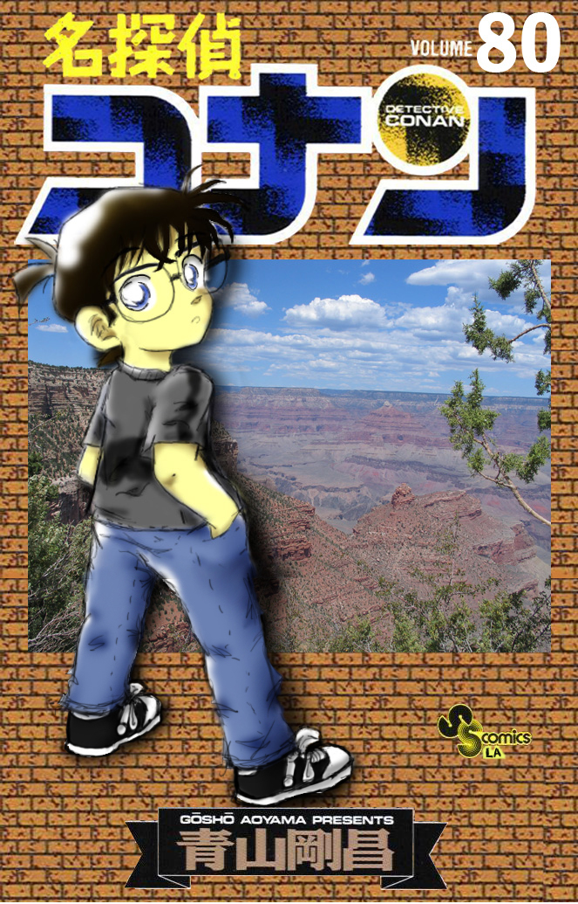

|

Shinichi Kudo, seorang detektif SMA berusia 17 tahun yang biasanya membantu polisi memecahkan kasus, diserang oleh 2 anggota sindikat misterius ketika mengawasi sebuah pemerasan. Ia kemudian diberi minum racun misterius yang baru selesai dikembangkan untuk membunuhnya. Namun, karena sebuah efek samping yang jarang terjadi yang tidak diketahui anggota sindikat tersebut, racun tersebut mengakibatkan tubuhnya mengecil seperti anak kecil berusia tujuh tahun setelah mereka meninggalkannya.[2]
Untuk menyembunyikan identitasnya dan untuk menginvestigasi keadaan sindikat tersebut, yang selanjutnya dikenal dengan nama Organisasi Berbaju Hitam atau Organisasi Hitam, dia menyamarkan namanya menjadi Conan Edogawa.[3] Untuk mencari jejak sindikat tersebut, dia tinggal bersama dengan teman sejak kecilnya, Ran Mouri, yang ayahnya, Kogoro Mouri, merupakan seorang detektif swasta.[3] Dia bersekolah di SD Teitan dan membentuk Grup Detektif Cilik dengan 3 teman sekelasnya, yaitu: Ayumi Yoshida, Mitsuhiko Tsuburaya, dan Genta Kojima.[4] Meskipun tubuhnya mengecil, ia tetap memecahkan kasus. Biasanya, ia menyelesaikan kasus-kasus tersebut dengan meniru suara Kogoro Mouri dengan alat yang diciptakan oleh tetangganya, Profesor Agasa. Kogoro Mouri, seorang detektif yang agak bodoh, awalnya bingung pada kemampuan memecahkan kasusnya meningkat secara mendadak. Tetapi, kemudian ia tidak heran karena ia senang karena ketenarannya yang meningkat. Ran Mouri pernah beberapa kali mencurigai bahwa Conan adalah Shinichi, namun karena kecerdikan Conan, maka Ran pun percaya bahwa Conan bukanlah Shinichi.
Selanjutnya dalam seri ini, tokoh utama lainnya, Ai Haibara, muncul. Ai adalah seorang mantan anggota Organisasi Hitam, yang memiliki nama sandi "Sherry". Nama aslinya adalah Shiho Miyano, seorang ilmuan yang mengembangkan racun APTX 4869 yang membuat tubuh Shinichi mengecil.[5] Setelah kakaknya secara kejam dibunuh oleh anggota Organisasi Hitam, ia mencoba keluar dari organisasi itu, namun ia ditangkap.[5] Dia mencoba bunuh diri dengan menelan pil APTX 4869, namun ternyata tubuhnya mengecil, dan dia berhasil kabur dari organisasi tersebut.[5] Dia kemudian bersekolah di SD Teitan dengan nama samaran "Ai Haibara".[5] Dia mengetahui identitas asli Conan dan membantunya dalam perjuangan Conan untuk menjatuhkan Organisasi Hitam.[5]
Kemudian, Conan terlibat dengan Biro Investigasi Federal (FBI), dan mereka berhasil menangkap Kir, seorang anggota Organisasi Hitam. Kir kemudian diketahui merupakan seorang agen CIA yang menyamar, dan berjanji akan memberi informasi tentang Organisasi Hitam kepada FBI.[6] Mereka kemudian mengembalikan Kir ke organisasi tersebut. Kemudian, dia memberitahukan kepada FBI bahwa di Organisasi Hitam ada seorang anggota baru dengan nama sandi Bourbon.[7]
|